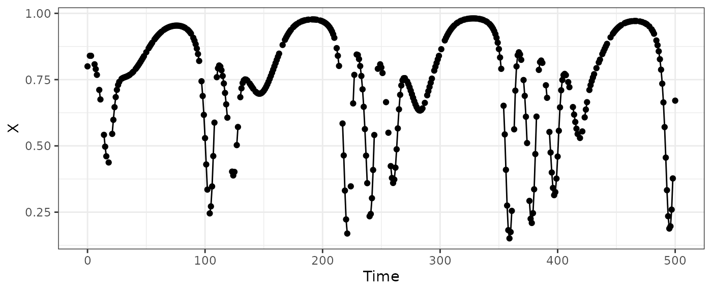
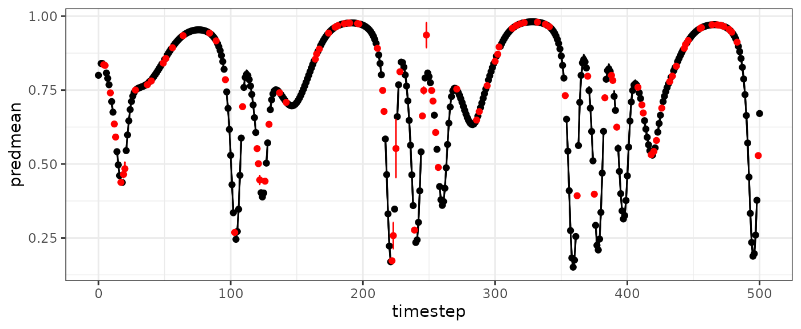
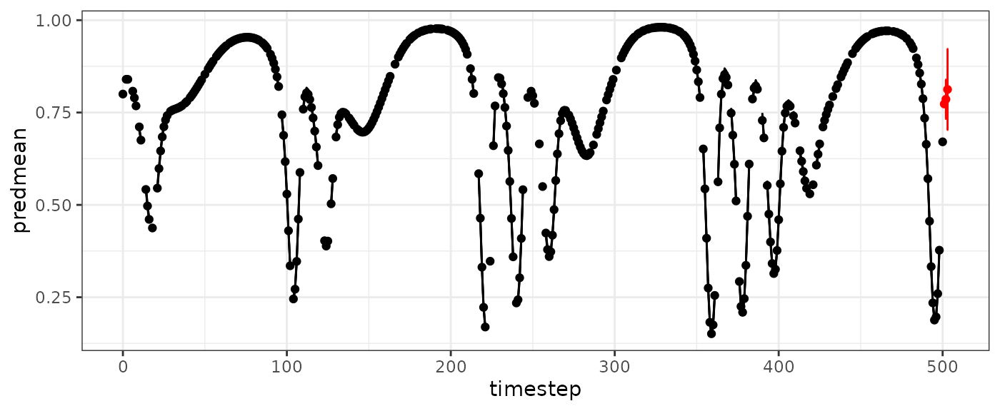
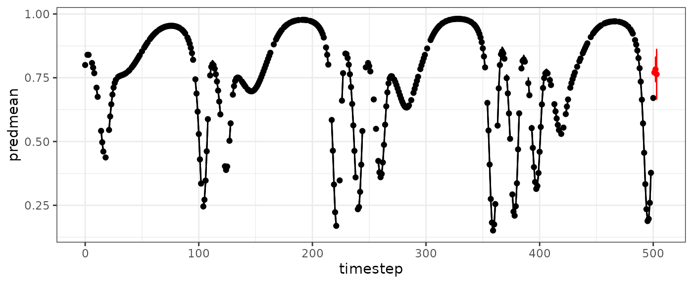

vtimestep.RmdBy default, fitGP excludes any rows that contain missing
values (NAs) in either the response or predictor variables. Thus, in a
delay embedding model, a missing datapoint in the middle of a time
series will be excluded as will the following E values
(assuming tau is 1). Stephan Munch and Bethany Johnson
developed a method whereby using the time spacing between a value and
its lagged predictors as another predictor, we can exclude less data,
generate predictions for all non-missing timepoints, and by adjusting
the spacing in the forecast matrix, generate forecasts multiple
timesteps into the future. The forthcoming paper will contain more
details.
Using this method requires that lag predictors be generated
beforehand (option 1 in Specifying
training data). The makelags function has an option for
the variable timestep method (vtimestep=TRUE) that will
generate the time difference lags automatically. Including the
time argument is strongly recommended, and you definitely
need to include it if the rows with missing values have already been
removed and/or the timesteps are uneven. Argument Tdiff_max
can be used to set the max time difference value considered (e.g. if you
have one large time gap that you don’t want to use this method for).
data(HastPow3sp)
#add some missing values for variable X
set.seed(20)
HPmiss=HastPow3sp[,c("Time","X")]
HPmiss[sample(1:nrow(HPmiss),100),"X"]=NA
ggplot(HPmiss,aes(x=Time,y=X)) +
geom_line() + geom_point() + theme_bw()
#> Warning: Removed 100 rows containing missing values (`geom_point()`).
#standard method
HPmisslags=makelags(data=HPmiss, y="X", time="Time", E=2, tau=1)
head(cbind(HPmiss,HPmisslags),15)
#> Time X X_1 X_2
#> 1 0 0.8000000 NA NA
#> 2 1 NA 0.8000000 NA
#> 3 2 0.8399347 NA 0.8000000
#> 4 3 0.8398126 0.8399347 NA
#> 5 4 NA 0.8398126 0.8399347
#> 6 5 NA NA 0.8398126
#> 7 6 0.8077967 NA NA
#> 8 7 0.7897597 0.8077967 NA
#> 9 8 0.7679588 0.7897597 0.8077967
#> 10 9 NA 0.7679588 0.7897597
#> 11 10 0.7111558 NA 0.7679588
#> 12 11 0.6752325 0.7111558 NA
#> 13 12 NA 0.6752325 0.7111558
#> 14 13 NA NA 0.6752325
#> 15 14 0.5417722 NA NA
#variable timestep method
HPmisslags=makelags(data=HPmiss, y="X", time="Time", E=2, tau=1, vtimestep=T)
head(cbind(HPmiss,HPmisslags),15)
#> Time X X_1 X_2 Tdiff_1 Tdiff_2
#> 1 0 0.8000000 NA NA NA NA
#> 2 1 NA NA NA NA NA
#> 3 2 0.8399347 0.8000000 NA 2 NA
#> 4 3 0.8398126 0.8399347 0.8000000 1 2
#> 5 4 NA 0.8398126 0.8399347 1 1
#> 6 5 NA 0.8398126 0.8399347 2 1
#> 7 6 0.8077967 0.8398126 0.8399347 3 1
#> 8 7 0.7897597 0.8077967 0.8398126 1 3
#> 9 8 0.7679588 0.7897597 0.8077967 1 1
#> 10 9 NA 0.7679588 0.7897597 1 1
#> 11 10 0.7111558 0.7679588 0.7897597 2 1
#> 12 11 0.6752325 0.7111558 0.7679588 1 2
#> 13 12 NA 0.6752325 0.7111558 1 1
#> 14 13 NA 0.6752325 0.7111558 2 1
#> 15 14 0.5417722 0.6752325 0.7111558 3 1
HPmissdata=cbind(HPmiss,HPmisslags)
vtdemo=fitGP(data=HPmissdata, y="X", x=colnames(HPmisslags), time="Time")
summary(vtdemo)
#> Number of predictors: 4
#> Length scale parameters:
#> predictor posteriormode
#> phi1 X_1 0.33608
#> phi2 X_2 0.50403
#> phi3 Tdiff_1 0.03449
#> phi4 Tdiff_2 0.01978
#> Process variance (ve): 0.0003144938
#> Pointwise prior variance (sigma2): 4.399279
#> Number of populations: 1
#> In-sample R-squared: 0.9997596
basepredplot=ggplot(vtdemo$insampresults,aes(x=timestep,y=predmean)) +
geom_line() +
geom_ribbon(aes(ymin=predmean-predsd,ymax=predmean+predsd), alpha=0.4, color="black") +
geom_point(aes(y=obs)) +
theme_bw()
basepredplot
#> Warning: Removed 3 rows containing missing values (`geom_line()`).
#> Removed 100 rows containing missing values (`geom_point()`).Generate predictions where an observed value is missing.
HPmissinterp=HPmissdata[is.na(HPmissdata$X),]
#reinsert true values to get fit statistics
HPmissinterp$X=HastPow3sp$X[is.na(HPmissdata$X)]
vtinterp=predict(vtdemo, newdata = HPmissinterp)
vtinterp$outsampfitstats
#> R2 rmse
#> 0.99460308 0.01440622
basepredplot +
geom_point(data=vtinterp$outsampresults, aes(y=predmean), color="red") +
geom_errorbar(data=vtinterp$outsampresults,
aes(ymin=predmean-predsd,ymax=predmean+predsd),color="red")
#> Warning: Removed 3 rows containing missing values (`geom_line()`).
#> Warning: Removed 100 rows containing missing values (`geom_point()`).
#> Warning: Removed 1 rows containing missing values (`geom_point()`).
You can also generate a forecast matrix using the variable timestep
method. The number of timesteps to forecast can be specified with
Tdiff_fore.
HPmissfore=makelags(data=HPmiss, y="X", time="Time", E=2, tau=1,vtimestep=T,
forecast=T, Tdiff_fore=c(1,2,3))
HPmissfore
#> Time X_1 X_2 Tdiff_1 Tdiff_2
#> 1 501 0.6706712 0.3773338 1 2
#> 2 502 0.6706712 0.3773338 2 2
#> 3 503 0.6706712 0.3773338 3 2
vtpred=predict(vtdemo, newdata = HPmissfore)
basepredplot +
geom_point(data=vtpred$outsampresults, aes(y=predmean), color="red") +
geom_errorbar(data=vtpred$outsampresults,
aes(ymin=predmean-predsd,ymax=predmean+predsd),color="red")
#> Warning: Removed 3 rows containing missing values (`geom_line()`).
#> Warning: Removed 100 rows containing missing values (`geom_point()`).
When using the variable timestep method, the function
makelags can also be used to generate an augmentation data
matrix that can be passed to fitGP. This should work as
long as the settings in makelags match, except use
augment=TRUE. When the augmentation table is generated,
makelags will print a table showing the original number of
each Tdiff combination in the original dataset (Freq), and the total
number of with the augmentation data included (Freq_new). Combinations
are added up to nreps, if possible (currently defaults to
10). By default, only Tdiff combinations that appear in the original
dataset are used, however, if you supply a vector
Tdiff_fore, then the augmentation matrix will include or
all possible combinations of the Tdiff values supplied in
Tdiff_fore.
HPmisslags=makelags(data=HPmiss, y="X", time="Time", E=2, tau=1, vtimestep=T)
HPaug=makelags(data=HPmiss, y="X", time="Time", E=2, tau=1, vtimestep=T,augment=T)
#> defaulting to nreps=10
#> Population 1
#> Tdiff_1 Tdiff_2 Freq Freq_new
#> 1 1 1 254 254
#> 2 1 2 53 53
#> 3 1 3 10 10
#> 4 1 4 1 10
#> 5 2 1 49 49
#> 6 2 2 9 10
#> 7 2 3 6 10
#> 8 3 1 14 14
#> 9 3 2 2 10
#> 10 4 1 1 10
head(HPaug,15)
#> Time X X_1 X_2 Tdiff_1 Tdiff_2
#> 1 27 0.7415992 0.7298417 0.5983000 1 4
#> 2 350 0.8653432 0.8893022 0.9421675 1 4
#> 3 274 0.7211600 0.7329290 0.7553480 1 4
#> 4 454 0.9553470 0.9521282 0.9348765 1 4
#> 5 360 0.1750461 0.1511581 0.5433682 1 4
#> 6 235 0.6474259 0.7134480 0.8430290 1 4
#> 7 265 0.6380414 0.5660041 0.3600867 1 4
#> 8 158 0.7878936 0.7758827 0.7319369 1 4
#> 9 98 0.6882140 0.7438975 0.8671781 1 4
#> 10 81 0.9496843 0.9522842 0.9535575 2 2
#> 11 287 0.6622841 0.6414903 0.6343657 2 3
#> 12 95 0.8204110 0.8671781 0.9077405 2 3
#> 13 112 0.8033088 0.7590895 0.4616467 2 3
#> 14 46 0.8234923 0.8093649 0.7904988 2 3
#> 15 481 0.9321890 0.9506928 0.9583035 3 2
HPmissdata=cbind(HPmiss,HPmisslags)
vtdemo_aug=fitGP(data=HPmissdata, y="X", x=colnames(HPmisslags), time="Time",
augdata=HPaug)
summary(vtdemo_aug)
#> Number of predictors: 4
#> Length scale parameters:
#> predictor posteriormode
#> phi1 X_1 0.31120
#> phi2 X_2 0.45204
#> phi3 Tdiff_1 0.04290
#> phi4 Tdiff_2 0.07374
#> Process variance (ve): 0.0003759305
#> Pointwise prior variance (sigma2): 4.705812
#> Number of populations: 1
#> In-sample R-squared: 0.9997533
vtapred=predict(vtdemo_aug,newdata=HPmissfore)
vtainterp=predict(vtdemo_aug, newdata = HPmissinterp)
vtainterp$outsampfitstats
#> R2 rmse
#> 0.99726036 0.01026417
ggplot(vtdemo_aug$insampresults,aes(x=timestep,y=predmean)) +
geom_line() +
geom_ribbon(aes(ymin=predmean-predsd,ymax=predmean+predsd), alpha=0.4, color="black") +
geom_point(aes(y=obs)) +
theme_bw() +
geom_point(data=vtapred$outsampresults, aes(y=predmean), color="red") +
geom_errorbar(data=vtapred$outsampresults,
aes(ymin=predmean-predsd,ymax=predmean+predsd),color="red")
#> Warning: Removed 3 rows containing missing values (`geom_line()`).
#> Warning: Removed 100 rows containing missing values (`geom_point()`).
#vtaloo=predict(vtdemo_aug,predictmethod = "loo")
#vtaseq=predict(vtdemo_aug,predictmethod = "sequential")
#vtloo=predict(vtdemo,predictmethod = "loo")
#vtseq=predict(vtdemo,predictmethod = "sequential")Munch, S. B., Poynor, V., and Arriaza, J. L. 2017. Circumventing structural uncertainty: a Bayesian perspective on nonlinear forecasting for ecology. Ecological Complexity, 32:134.
Johnson, B., and Munch, S. B. 2022. An empirical dynamic modeling framework for missing or irregular samples. Ecological Modelling, 468:109948.